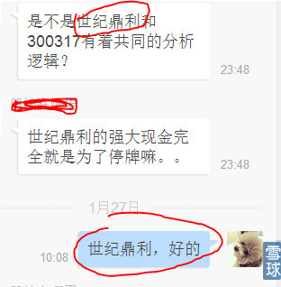
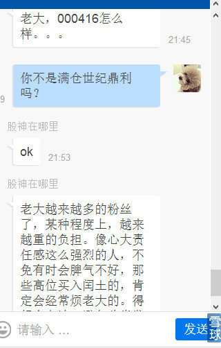
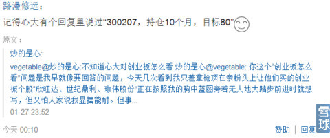

vegetable@炒的是心:不知道“心大”对创业板怎么看
炒的是心@vegetable: 你这个“创业板怎么看”问题是我早就想要回答的问题，今天几次看到我只差拿枪顶在亲粉头上让他们买的创业板个股“欣旺达、世纪鼎利、珈伟股份”正在按照我的胸中蓝图旁若无人地大踏步前进时就想写，但又怕人家说我显摆能耐。但事关粉丝的真金白银，还是先简单写几句，详细的在《他们为什么要那么干：下部》里面再写，这个是个大问题。
我之所以痛恨那些极端不负责任的傻逼牛人和媒体评论人？是因为别人的钱财在他们眼里如同草纸，自己又没有那个能力和见识，却总是敢用“一篙子扫一船人”的方式大放厥词。他们绝对不是人品不好，但是能力不够你对事关人家钱财的事说个屁呀，去写写心灵鸡汤之类精神层面的不是挺好吗？散户就那么一滴滴钱、心理还那么脆弱，没有具体微观到个股所指的就不要胡说八道。看看我写的《再牛逼的牛人，股评“心灵鸡汤”照样一文不值》就知道我要说什么。
我一辈子为自己对人忠诚而孤傲，知道“忠诚”含义吗？
那些人一旦写股评就是“创业板估值太高，我绝对不会去碰，看那些不作死不会死的散户和狂人去玩吧”，这几乎是他们从创业板585点开始到现在1754点就没有换过新鲜词的标准用语。那么多创业板股票因为业绩和成长性不好被如同主板股票一样腰斩腰斩再腰斩视而不见，对真正高速成长的股票就用一句“创业板股票市盈率太高”一网打尽。我一直想不通，将来2016年注册制来临的时候，他们会再怎么说？
我来举个例子：2014年11月14日我就开始回复粉丝咨询“300207欣旺达”未来状况问题。
2014年12月23日又开始专门写入“雪球网自选股备注栏”详细分析欣旺达的基本面情况：
欣旺达2013年全年累计每股收益是0.33元，2014年第3季度财报累计每股收益0.3552元已经是2013年全年每股收益的107.6%，同比2013年第三季度单季每股收益0.1802元增长99.72%，其中：1季度是0.0619元同比0.0566元增长9,3%，2季度是0,128元同比0.073元增长75.3%，3季度每股收益0.165元同比0.052元增长217.3%。预计2014年第4季度单季每股收益会再次超过前三季度的总和达到每股收益0.46元，鉴于“欣旺达”电池模块已经嵌入苹果、联想、大品牌手机供应链的即成事实，大家可以自由的查阅F10资料公司公开的业务合同公告信息，2015年每股收益在2014年0.82元的基础上有可能接近再翻一番到1.52元，再加上新能源汽车电池项目对业绩的驱动2016年有可能达到每股收益2.53元。这种成长速度还不够快？到哪里找这么好成长性的公司？
我已经在雪球网用热情洋溢的词汇描述过我眼中“欣旺达”未来时光的景象：2015年1月底或者2月初月，公司会发布2014年业绩同比大幅增长130%快报助涨股价，等股价高位回落1个多月后，又要迎来2015年4月份的1季报公布每股收益0.35—0.5元之间同比增长465%—713%之间吓人的第1季度财报。这个时候的股价一定会在3月底之前被大肆渲染与极度炒作，我已经早在3个月之前就嗅到到大半年之后市场大牛股的味道，如果再公布一点类似年报送股的消息配合，简直就是往大资金口袋里倒钱啊！我3个月前给它的估值是80元，为了我粉丝的安全，就打折到60元，当“欣旺达”股价2014年12月23日再次下跌到23.54元的时候，我写到：今天跟我抢“欣旺达”的人都是“坏银”，教训粉丝：就你们那点破本事还炒个屁股啊？这种股票你管它有没有庄？没有庄才好呢，这个市场钱多、人傻，啥都不缺，唯独缺货真价实的正宗大成长股，只要是真实好股票，市场中的聪明钱自己就会长腿跑进来，这些钱比狗鼻子都灵。就买300207欣旺达握紧3个月，翻一倍走人，等你出来，你们的“心大”再帮你找下一只，多美的事啊？还没事一天到晚在股市冲来杀去的，你有那个本事吗？找中线、长线牛股，那是我的最长项，是我的本业啊，亲粉们咋忘了我的职业是什么？我反复教育你们：你们不是职业运动员就不要去跟人家比“前空翻”，“心大”教你们一学就会的“前滚翻”多轻松？
我们再来看300050世纪鼎利，我太熟悉它啦，温州高铁出轨的受害者，就是那天它被市场狂虐的时候我开始研究它，心大是谁？人性大师啊！记得，我经常讲的“一切都会过去的”这句话吗？这句话不是我说的，是巴西人民在国家足球队失败回国时唱的主题歌“一切都会过去”，过了4年巴西人们万人空巷迎接凯旋的足球英雄们的时候，还是唱的这首主题歌。“心大”年轻的时候就牢牢记住这个故事：一切都会过去！不仅仅严格要求自己这样做人，同样以它观察政治、经济、治安、国际关系、军事、黑天鹅事件等等现象。你们还记得三聚氰胺、塑料酒事件吗？耽误伊利股份、贵州茅台股价上涨或者下跌吗？
虽然一切都会过去，但是我不会忘记。当年的世纪鼎利就是高铁信号电子集成系统最大的供应商，2014年我密切关注它每一个新订单合同数额的微妙变化、测算来年利润最大值的波动、股价目前在主板、中小板、创业板同比是不是属于绝对价格+相对价格都够低廉？这样一说你们知道炒股票怎么炒的了吗？你们怎么总是叫人操不完心呢？看看我今天是怎么气愤的回复“笨粉丝”的：见下图:

上图粉丝问2个股票，我直接回答世纪鼎利：好的。一般人理解就是我只选中一个，是不是？这是正常的顺序思维。好了，你手持它最少总得有1个月到2个月吧，就算天天涨翻一倍得多少日子？紧接着还没有过2天，又来了问：老大000416怎么样？我耐着性子回复：你不是满仓“世纪鼎利”吗？言下之意，你都满仓了，还一天八遍的问来问去问东问西，你以为我的时间跟你穷人时间一样分文不值啊？回复你是呵护你，那么多人屁事不懂，你以为我是摆摊卖艺呀？简直起码的人情世故都不懂，见下图。


 |
我对创业板怎么看？炒的是心 2015-01-27 23:51:26 |
Copyright © 1996-2014 SINA Corporation All Rights Reserved.